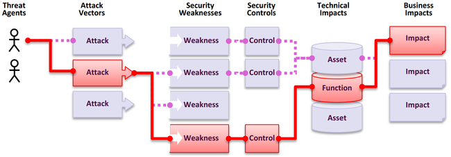

What are Application Security Risks?
Attackers can potentially use many different paths through your application to do harm to your business or organization. Each of these ways poses a potential risk that needs to be investigated.

| Threat Agents | Attack \ Vectors | Exploitability |
Likelihood of Missing Security
Controls |
Technical
Impacts |
Business
Impacts |
| By environment, \ dynamic by situation picture | By Application exposure (by environment | Avg Weighted Exploit | Missing Controls \ by average Incidence rate \ Weighed by coverage | Avg Weighted Impact | By Business |
In our Risk Rating we have taken into account the universal parameters of exploitability, average likelihood of missing security controls for a weakness and its technical impacts.
Each organization is unique, and so are the threat actors for that organization, their goals, and the impact of any breach. If a public interest organization uses a content management system (CMS) for public information and a health system uses that same exact CMS for sensitive health records, the threat actors and business impacts can be very different for the same software. It is critical to understand the risk to your organization based on the exposure of the application, the applicable threat agents by situation picture (for targeted and undirected attacks by business and location) and the individual business impacts.
How the data is used for selecting categories and ranking them
In 2017, we selected categories by incidence rate to determine likelihood, then ranked them by team discussion based on decades of experience for Exploitability, Detectability (also likelihood), and Technical Impact. For 2021, we used data for Exploitability and (Technical) Impact from the CVSSv2 and CVSSv3 scores in the National Vulnerability Database (NVD). For 2025, we continued the same methodology that we created in 2021.
We downloaded OWASP Dependency Check and extracted the CVSS Exploit, and Impact scores grouped by related CWEs. It took a fair bit of research and effort as all the CVEs have CVSSv2 scores, but there are flaws in CVSSv2 that CVSSv3 should address. After a certain point in time, all CVEs are assigned a CVSSv3 score as well. Additionally, the scoring ranges and formulas were updated between CVSSv2 and CVSSv3.
In CVSSv2, both Exploit and (Technical) Impact could be up to 10.0, but the formula would knock them down to 60% for Exploit and 40% for Impact. In CVSSv3, the theoretical max was limited to 6.0 for Exploit and 4.0 for Impact. With the weighting considered, the Impact scoring shifted higher, almost a point and a half on average in CVSSv3, and exploitability moved nearly half a point lower on average when we conducted analysis for the 2021 Top Ten.
There are approximately 175k records (up from 125k in 2021) of CVEs mapped to CWEs in the National Vulnerability Database (NVD), extracted from OWASP Dependency Check. Additionally, there are 643 unique CWEs mapped to CVEs (up from 241 in 2021). Within the nearly 220k CVEs that were extracted, 160k had CVSS v2 scores, 156k had CVSS v3 scores, and 6k had CVSS v4 scores. Many CVEs have multiple scores, which is why they total more than 220k.
For the Top Ten 2025, we calculated average exploit and impact scores in the following manner. We grouped all the CVEs with CVSS scores by CWE and weighted both exploit and impact scores by the percentage of the population that had CVSSv3, as well as the remaining population with CVSSv2 scores, to get an overall average. We mapped these averages to the CWEs in the dataset to use as Exploit and (Technical) Impact scoring for the other half of the risk equation.
Why not use CVSS v4.0, you may ask? That’s because the scoring algorithm was fundamentally changed, and it no longer easily provides the Exploit or Impact scores as CVSSv2 and CVSSv3 do. We will attempt to figure out a way to use CVSS v4.0 scoring for future versions of the Top Ten, but we were unable to determine a timely way to do so for the 2025 edition.
For the incidence rate, we calculated the percentage of applications vulnerable to each CWE from the population tested by an org for a period of time. As a reminder, we are not using frequency (or how many times an issue appears in an application), we are interested in what percentage of the population of applications were found to have each CWE.
For coverage we look at the percentage of applications tested by all organizations for a given CWE. The higher the calculated coverage, the stronger the assurance that the incidence rate is accurate as the sample size is more representative of the population.
The formula that we used for this iteration is similar to 2021, with some weighting changes: (Max Incidence Rate % * 1000) + (Max Coverage % * 100) + (Avg Exploit * 10) + (Avg Impact * 20) + (Sum Occurrences / 10000) = Risk Score
The calculated scores ranged from 621.60 for the category of Broken Access Control to 271.08 for Memory Management Errors.
This is not a perfect system, but it is valuable for ranking risk categories.
One additional challenge that is growing is the definition of an "application". As the industry shifts to different architectures that consist of micro-services and other implementations that are smaller than a traditional application, calculations are more difficult. For instance, if an organization is testing code repositories, what does it consider an application? Similar to the growth of CVSSv4, the next edition of the Top Ten may need to adjust the analysis and scoring to account for a constantly changing industry.
Data Factors
There are data factors that are listed for each of the Top Ten Categories, here is what they mean:
CWEs Mapped: The number of CWEs mapped to a category by the Top Ten team.
Incidence Rate: Incidence rate is the percentage of applications vulnerable to that CWE from the population tested by that org for that year.
Weighted Exploit: The Exploit sub-score from CVSSv2 and CVSSv3 scores assigned to CVEs mapped to CWEs, normalized, and placed on a 10pt scale.
Weighted Impact: The Impact sub-score from CVSSv2 and CVSSv3 scores assigned to CVEs mapped to CWEs, normalized, and placed on a 10pt scale.
(Testing) Coverage: The percentage of applications tested by all organizations for a given CWE.
Total Occurrences: Total number of applications found to have the CWEs mapped to a category.
Total CVEs: Total number of CVEs in the NVD DB that were mapped to the CWEs mapped to a category.
Formula: (Max Incidence Rate % * 1000) + (Max Coverage % * 100) + (Avg Exploit * 10) + (Avg Impact * 20) + (Sum Occurrences / 10000) = Risk Score